En Villa Automation S.A.C desarrollamos sistemas inteligentes aplicados a la
industria, agricultura, defensa, robótica y ciencia. Nuestros modelos de IA
permiten analizar datos, tomar decisiones autónomas y optimizar procesos en
tiempo real.
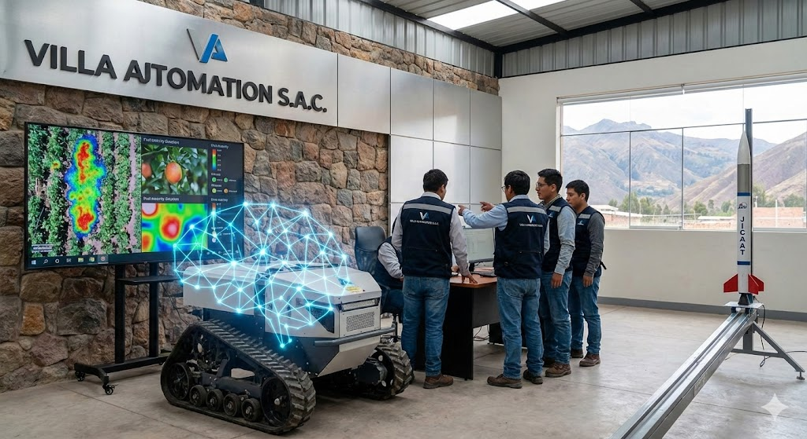
IA para Automatización Industrial
Desarrollamos algoritmos de visión artificial, control predictivo,
reconocimiento de objetos, clasificación inteligente, mantenimiento
predictivo y análisis avanzado para líneas de producción.
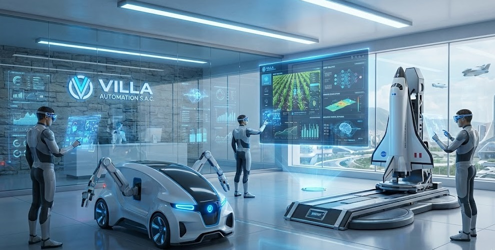
IA para Agricultura y Clima
Implementamos modelos capaces de predecir plagas, estimar rendimiento de
cultivos, anticipar heladas, optimizar riego y gestionar invernaderos
con inteligencia avanzada.
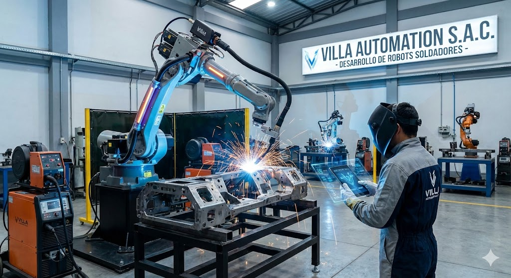
IA aplicada a Robots y Manipuladores
IA para navegación autónoma, detección de objetos, asistencia colaborativa,
control inteligente, aprendizaje por refuerzo y robótica avanzada para industria,
minería y agricultura.
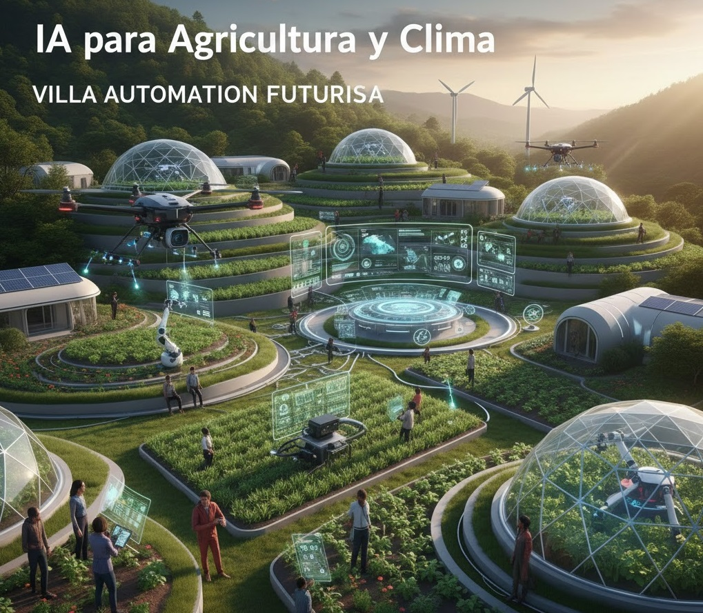
IA para Seguridad y Defensa
Sistemas de vigilancia inteligente, análisis de amenazas, detección de intrusos,
drones inteligentes y plataformas para monitoreo avanzado con IA en tiempo real.
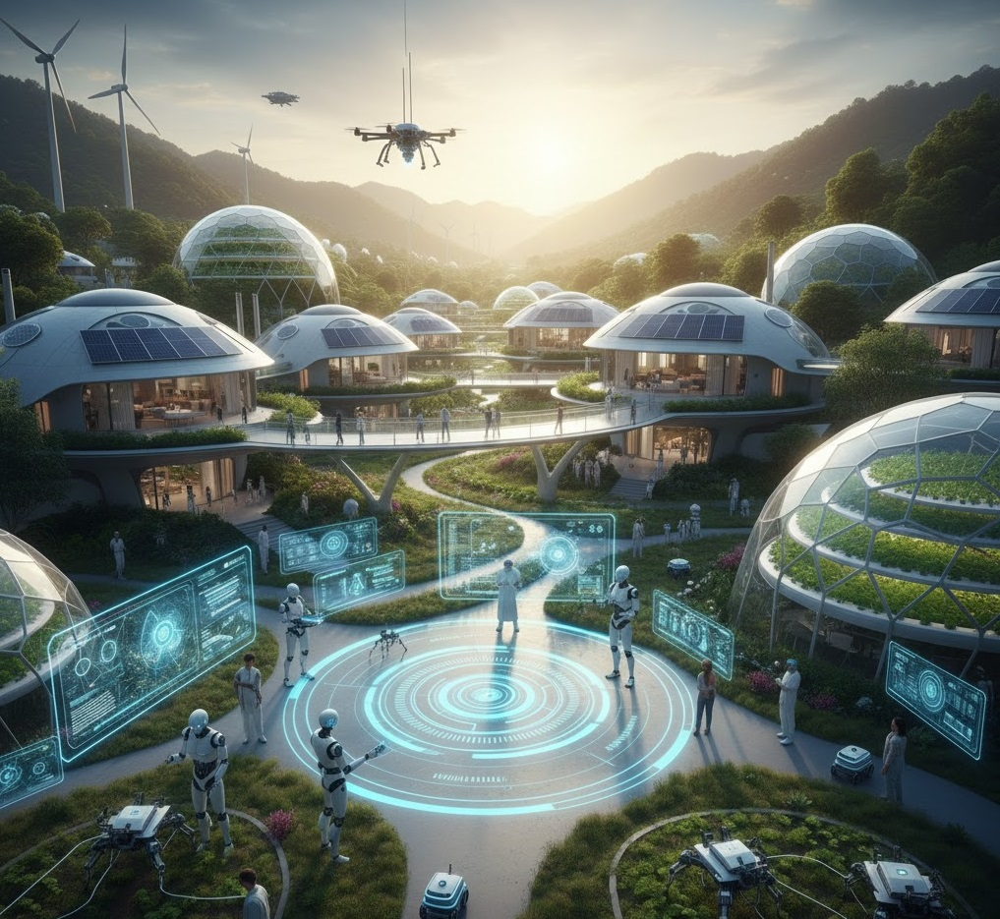
IA para Satélites y Aeroespacial
Procesamiento autónomo de telemetría, predicción de órbitas, control
inteligente de actitud, gestión térmica, reconocimiento desde órbita y
análisis de datos científicos con modelos avanzados.
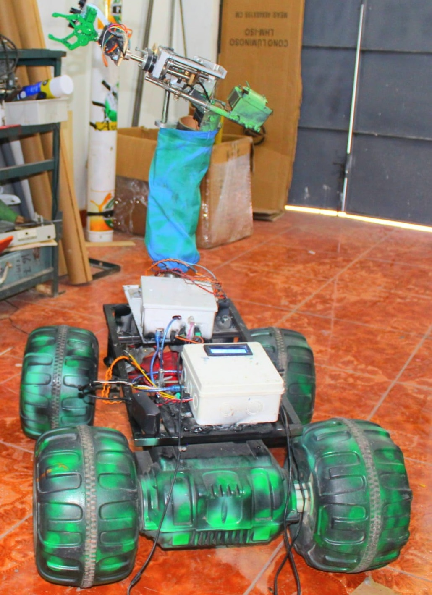
Analítica Predictiva e Industria 4.0
Implementación de plataformas inteligentes capaces de predecir fallas,
optimizar energía, reducir costos operativos y mejorar la eficiencia total
de plantas industriales.
×
Solicitud de Cotización
Informaciones Generales sobre Controladores Inteligentes
En Villa Automation SAC desarrollamos controladores inteligentes de alto rendimiento diseñados para automatizar, supervisar y optimizar procesos industriales,
agrícolas y científicos. Nuestros equipos integran tecnología IoT, control avanzado y electrónica robusta para ofrecer soluciones confiables y escalables.
Un ejemplo el controlador de la imagen arriba tiene las siguiente carateristicas:
Control en tiempo real con algoritmos PID, MPC e IA.
Comunicación inalámbrica: Wi-Fi, Bluetooth, LoRa y GSM.
Pantallas LCD/OLED táctiles según modelo.
Registro de datos en memoria local y nube.
Compatibilidad con sensores industriales y protocolos estándar.
Diseño modular para expansiones y personalización.
Software seguro y actualizable .
Aplicaciones
Agricultura inteligente.
Comunicación inalámbrica: Wi-Fi, Bluetooth, LoRa y GSM.
Monitoreo ambiental y climático.
Control de motores, bombas y actuadores.
Instrumentación científica y educativa.
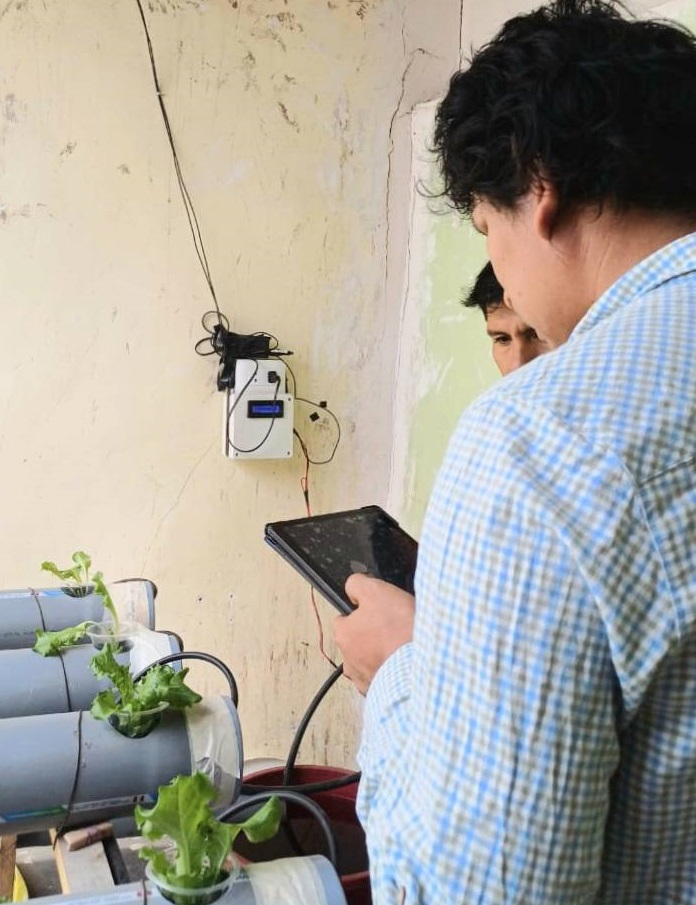
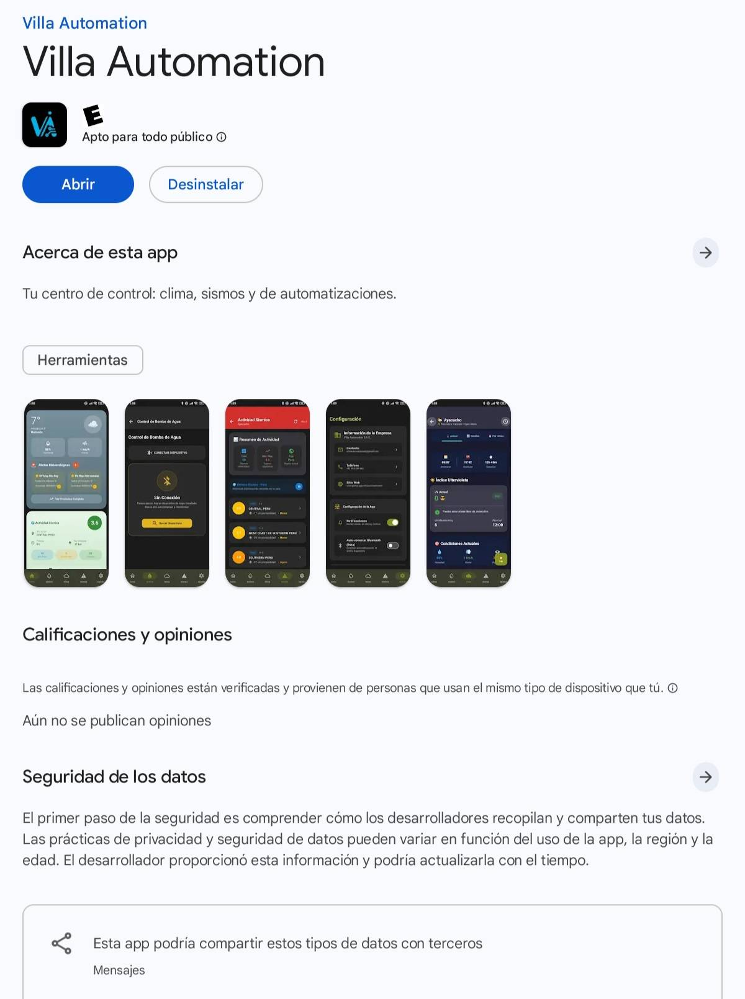
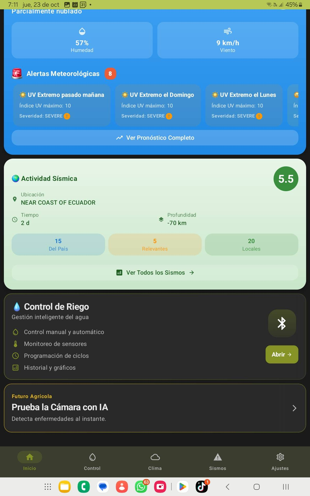
Integración y Plataforma
Monitorear variables en tiempo real mediante nuestro aplicativo en Play Store .
Acceder desde cualquier dispositivo (PC/Tablet/Mobile).
Ventajas competitivas
Desarrollo 100% peruano
Soporte técnico especializado.
Personalización para cada proyecto.
Actualizaciones continuas.
Alta confiabilidad y precisión.
Desarrollo de Controladores Inteligentes de Calidad de Aire y Gases
Además de nuestras soluciones robóticas avanzadas, en Villa Automation SAC hemos desarrollado una línea de controladores inteligentes diseñados para monitorear, analizar y gestionar variables ambientales críticas. Estos equipos representan un paso fundamental hacia la modernización de los sistemas de seguridad, salud y automatización industrial.
Nuestros controladores inteligentes para calidad de aire y detección de gases integran sensores de alta precisión, procesamiento digital avanzado y algoritmos de análisis predictivo que permiten identificar cambios en el ambiente en tiempo real. Gracias a su arquitectura modular, pueden adaptarse a diversos entornos: invernaderos, laboratorios, industrias,
espacios cerrados, unidades móviles y sistemas de defensa.
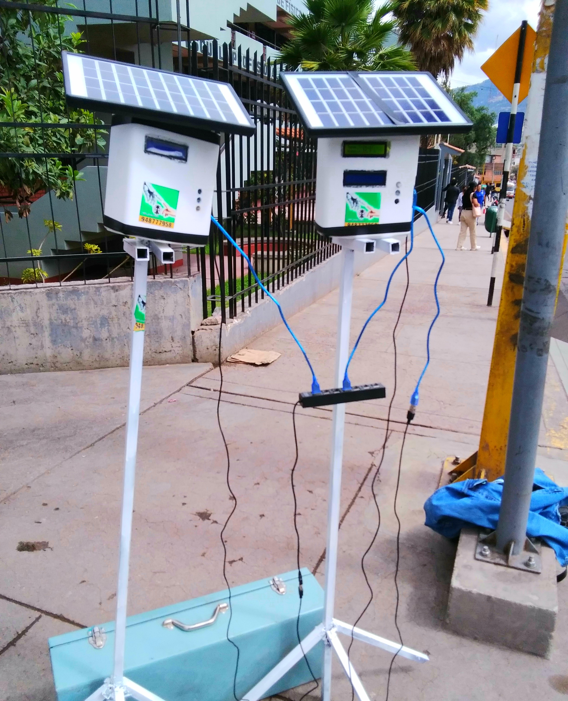
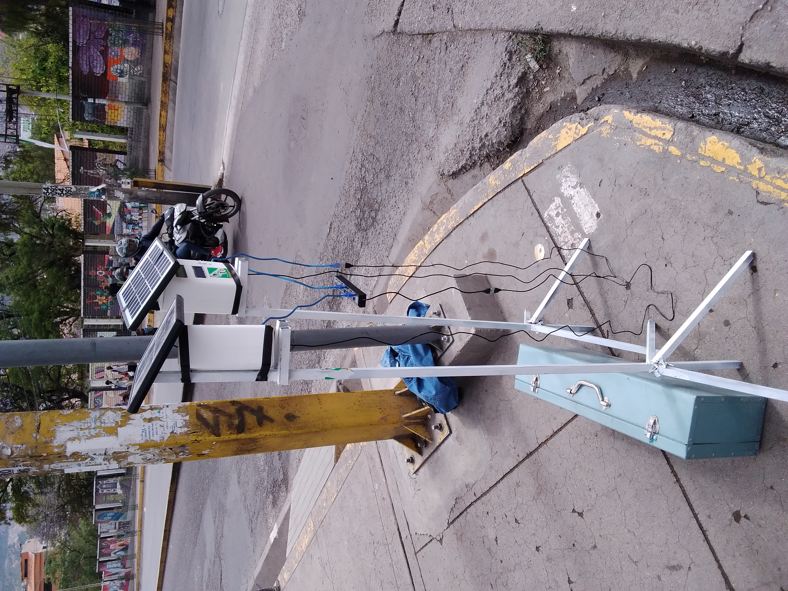
Estos dispositivos no solo brindan mediciones, sino que actúan como sistemas de decisión, permitiendo automatizar procesos, prevenir accidentes y garantizar ambientes seguros y eficientes. Su diseño robusto, intuitivo y adaptable los convierte en una herramienta indispensable para sectores como agricultura, minería, salud, defensa, educación, investigación y seguridad industrial.
La capacidad de integrar estos controladores con robots, actuadores y sistemas digitales permite crear un ecosistema tecnológico que refuerza la autonomía y la eficiencia de cualquier operación. En Villa Automation SAC estamos comprometidos con el desarrollo de soluciones inteligentes que respondan a las necesidades reales de nuestros clientes y contribuyan a un futuro más seguro, más saludable y más automatizado.
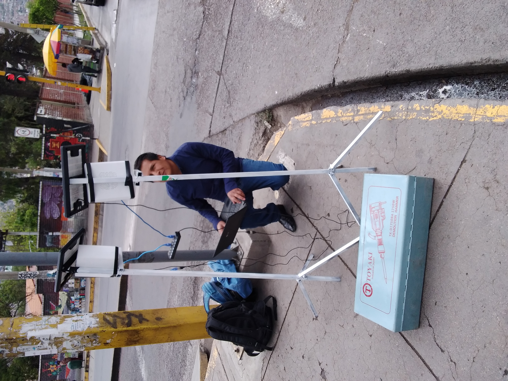
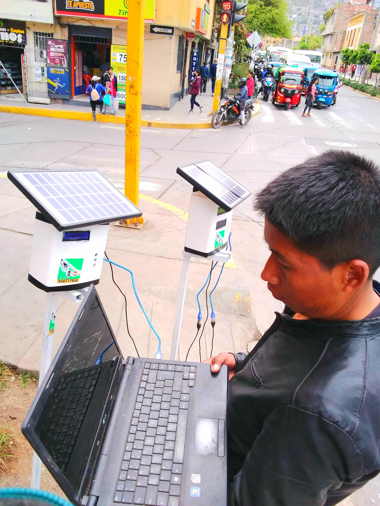
Monitoreo continuo de CO2, CO, CH4, humo y gases tóxicos.
Análisis de calidad de aire, humedad y temperatura.Alarmas inteligentes según umbrales definidos por el usuario.
Control automático de ventilación, extractores y sistemas de mitigación. Registro de datos en memoria y reporte para auditorías o investigación.
Comunicación inalámbrica mediante Bluetooth, WiFi o radiofrecuencia.
Compatibilidad con aplicaciones móviles y plataformas IoT
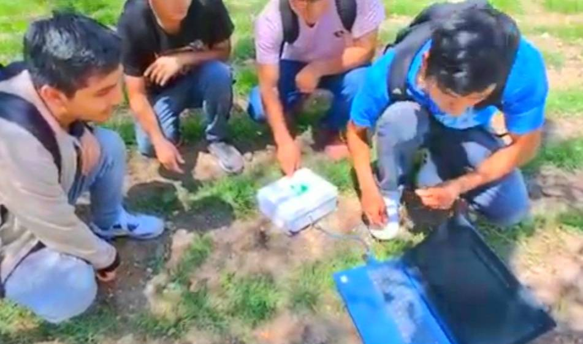
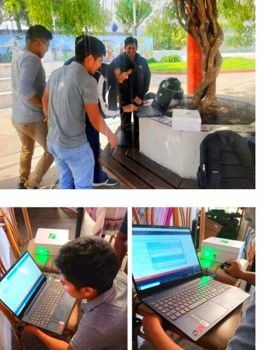
Sistema de alarma de seguridad inteligente
Nuestro Sistema de Alarma de Seguridad Inteligente combina tecnología de vanguardia con un diseño robusto y confiable. Integra sensores de movimiento, detección perimetral, alertas inmediatas y un potente módulo de sirena para disuadir cualquier intento de intrusión. El controlador, desarrollado por Villa Automation, está construido para operar 24/7 bajo condiciones exigentes, garantizando seguridad continua.
Este sistema permite activar alarmas automáticas, enviar notificaciones en tiempo real y registrar eventos críticos, ofreciendo una protección moderna y eficiente. Su arquitectura inteligente facilita la integración con cámaras, módulos inalámbricos y sistemas de acceso, adaptándose a cualquier entorno.
Ideal para viviendas, almacenes, comercios, instituciones y proyectos industriales que requieran una seguridad confiable, escalable y de rápida respuesta.
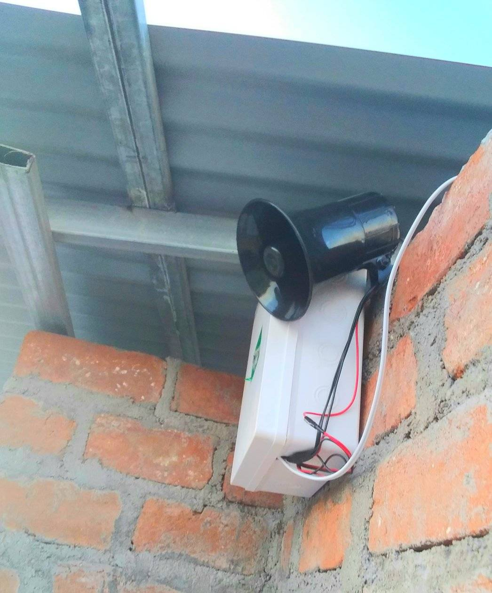
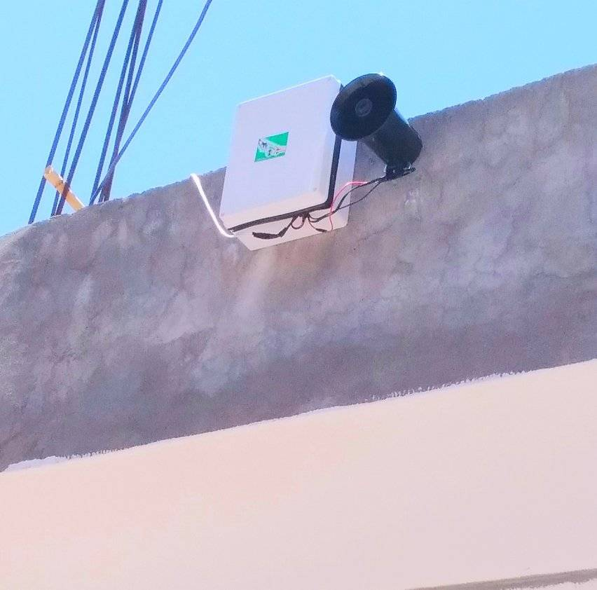
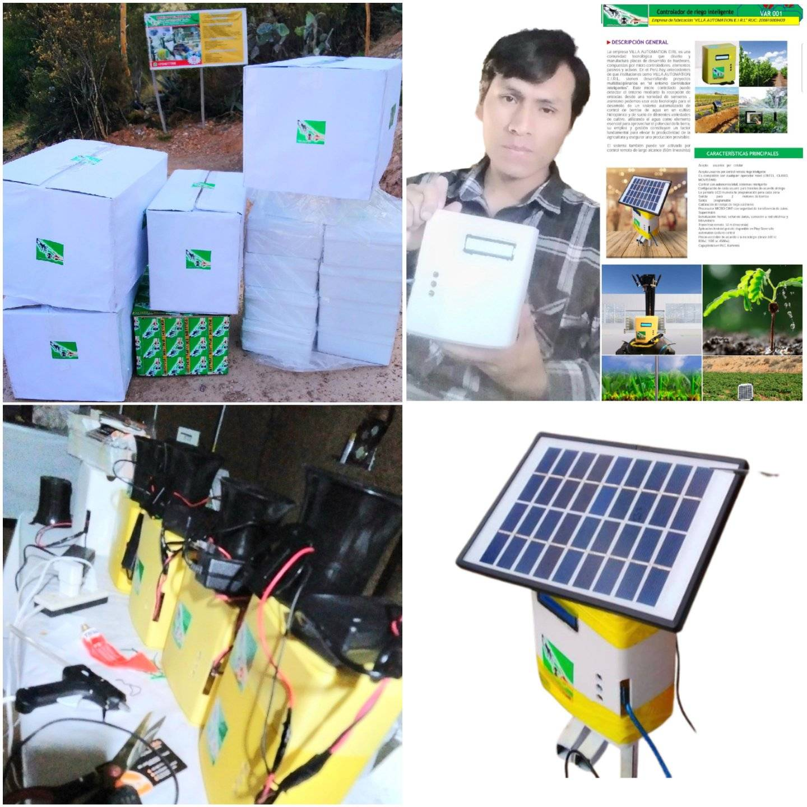
otros videos en you tube similares:
Presupuesto dependera la cantida de sensores y modulos